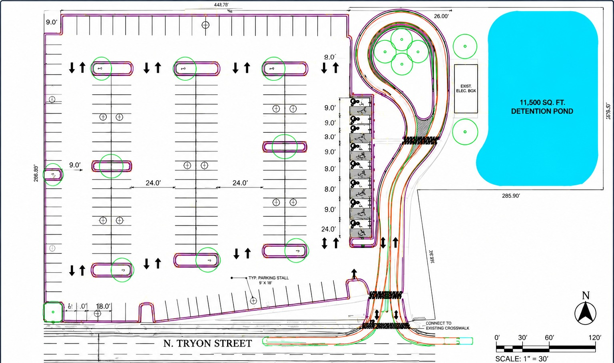
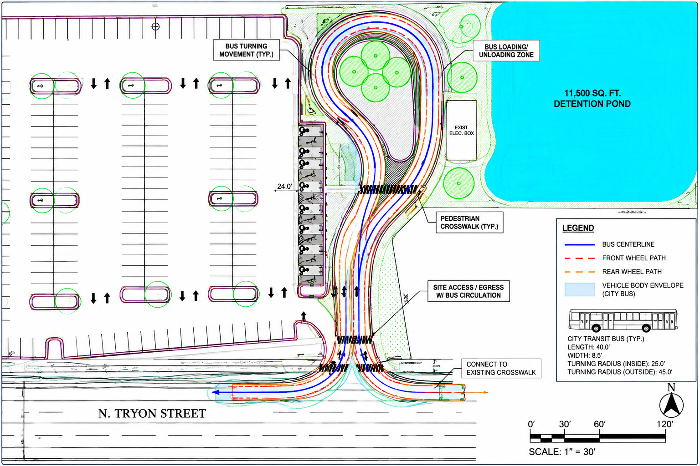
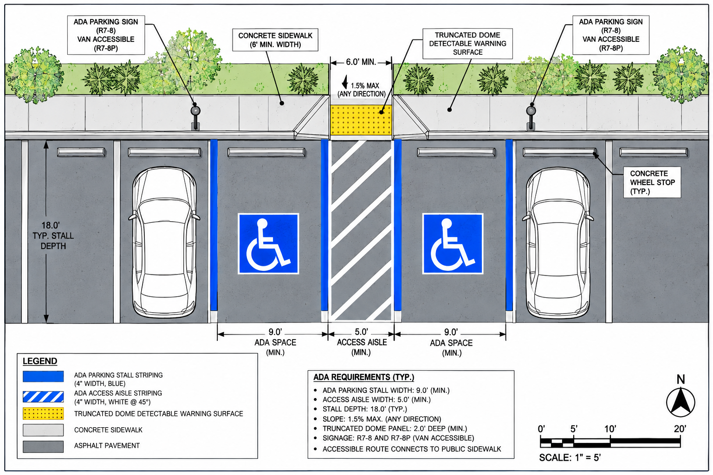
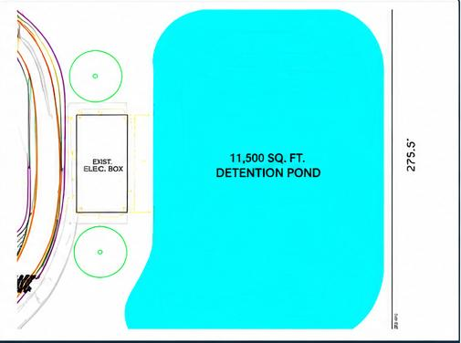

ACADEMIC PROJECT
Transit-Accessible Parking Lot Design
Site Civil / Land Development — Class Project
A multimodal site design integrating parking, public transit, accessibility, stormwater management, and site amenities within a constrained urban parcel along N. Tryon Street.
Site Plan Breakdown

Overall Site Plan
Complete Site Layout

Parking Layout
Stall Configuration & Circulation
- 191-space parking configuration
- 9' × 18' typical stalls
- 24' drive aisles

Transit Circulation
Bus Access & Turning Movements
- Full-size city bus circulation
- Coordinated with pedestrian access
- Specialized turning geometry

ADA & Pedestrian
Accessible Design Features
- ADA-accessible parking spaces
- Pedestrian crossings and connectivity
- Ramps and accessible routes

Stormwater Management
Detention Pond & Site Features
- 11,500 sq ft detention pond
- Integrated landscaping
- Supports runoff management
Project Overview
This site development project integrates a 191 space parking facility with full-size city bus access, ADA accessible parking, pedestrian circulation, landscaping, site lighting, and stormwater management within a constrained parcel along N. Tryon Street. The design supports both everyday vehicle circulation and public transit operations within the same development footprint, demonstrating a systems-based approach to site design.
Project Information
| Location | N. Tryon Street, Charlotte, NC |
| Site Size | 30' × 40' (Approx.) |
| Total Parking Spaces | 191 Spaces |
| Key Features | Transit circulation, ADA access, pedestrian pathways, detention pond |
| Software | Civil 3D (Site Design) |
| Project Type | Academic – Site Civil / Land Development |
Design Considerations
- Transit circulation and turning geometry
- ADA compliance and pedestrian flow
- Efficient use of constrained site area
- Stormwater detention and site grading
- Landscaping, lighting, and safety
- Coordination of multiple site systems
Design Approach
I approached the layout as a multimodal circulation and site-optimization problem, where transportation, accessibility, drainage, and land use requirements must function together. The design balances efficient parking with transit operations and site infrastructure, demonstrating how thoughtful geometric planning can make several competing engineering systems work within one cohesive design.
Key Takeaways
- 191-space parking facility
- Full-size city bus access
- ADA-compliant design
- 11,500 sq ft detention pond
- Pedestrian connectivity
- Integrated, buildable site layout